Приложение позволяет управлять создавать проекты и задачи, поручать выполнение задач определенным бригадам, просматривать и редактировать график работ, представленного диаграммой Ганта, осуществлять автоматическое планирование проекта, группировать задачи, разделять их по приоритетам, просматривать сведения о текущем состоянии проектов и задач. Представленные скриншоты демонстрируют первоначальный внешний вид и изменения в интерфейсе после стилизации.
При разработке использовались: C++, Qt, KD Chart.
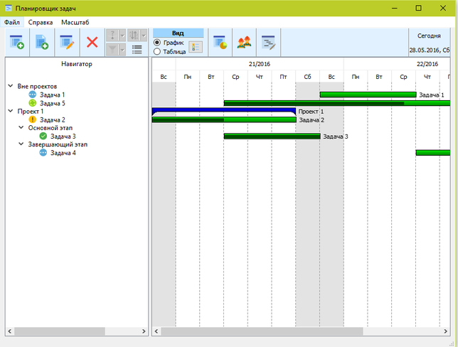 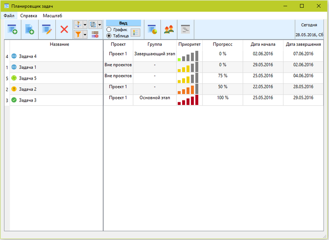 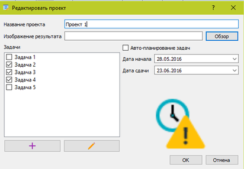 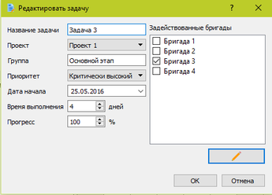 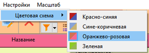
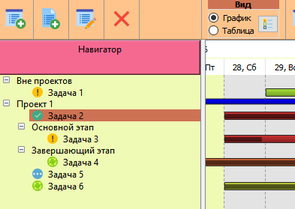
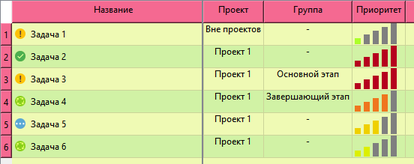
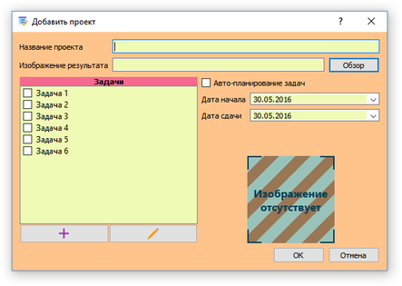
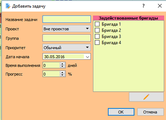
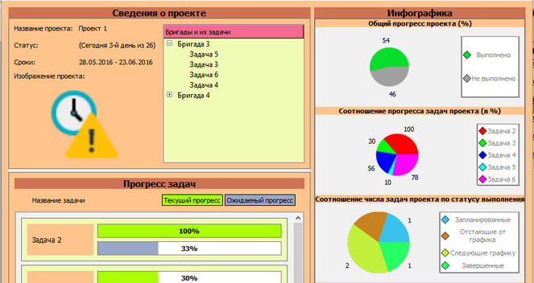
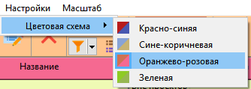
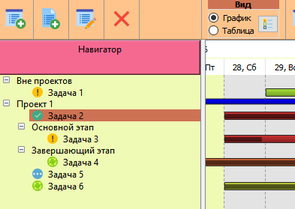
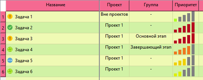
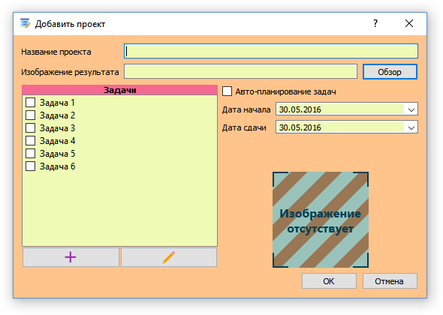
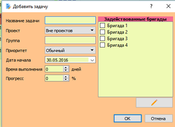
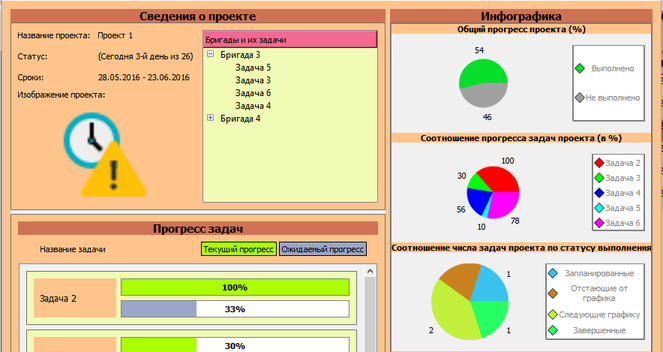